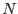
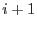
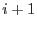
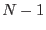

X-ray or optical photons are detected as `events' on the CCD cameras of XMM-Newton. Before one can do some science with these events, it is necessary to determine where in the sky each event comes from. This task is complicated by the fact the the attitude (ie, pointing direction and roll angle) of the XMM-Newton spacecraft does not stay exactly constant during the course of an exposure. Given a sufficiently detailed record of this wandering of the attitude it is of course possible to compute the sky origin of each individual event, but it is much more efficient in computational terms to approximate this notional continuous record by a discrete series of  attitude samples. Each sample is separated from its neighbours by time boundaries: it is sensible to choose the boundaries such that the attitude wander within a given pair of boundaries is restricted to within a preset acceptable range. Events falling between boundaries  and  are therefore assumed to be associated with attitude , and their sky position determined accordingly.
and  are therefore assumed to be associated with attitude , and their sky position determined accordingly.
Matters become a little more complicated if it is desired to create maps in sky coordinates which derive from things other than the simple occurrence of events. For example, a map of the relative exposure of the camera at each point in the sky. For this one needs additionally to associate a weight with each attitude sample. One can therefore perform transforms, one per attitude sample, of the exposure map from CCD coordinates to sky coordinates, weight them accordingly and then simply sum them together.
The present library therefore defines the concept of a series of attitude samples, with optional weights associated, separated by  time boundaries. The library provides routines for calculating the series of attitude samples from a supplied fine-detail record of the attitude wander, for calculating weights from GTIs, and also for reading and writing such an attitude series to or from a FITS table.
The attitude series is implemented in f90 as a variable type with the following structure:
type :: attBinType
type(SpacecraftAttitudeType) ::& ! type defined in module caloaldefs
att
real(double) ::&
binStartTime,&
gtiDuration
logical ::&
isGood
end type attBinType
Some points:
The FITS implementation of the series of attitude samples is a little different, in that only elements 2 to are stored in a table, the attitude and weight (not the start time, which is undefined) of the first element being stored in keywords of the table header. The details of the convention are as follows. The table should contain the following header keywords:
The required structure of the table itself is best described by a chunk of code from the library:
time => real64Data(addColumn(binnedAttTab, 'TSTART', REAL64, 's')) raDeg => real64Data(addColumn(binnedAttTab, 'RA', REAL64, 'deg')) decDeg => real64Data(addColumn(binnedAttTab, 'DEC', REAL64, 'deg')) paDeg => real64Data(addColumn(binnedAttTab, 'PA', REAL64, 'deg')) isGood => boolData( addColumn(binnedAttTab, 'IS_GOOD', BOOLEAN)) weights => real64Data(addColumn(binnedAttTab, 'WEIGHTS', REAL64))
Of these, only the column WEIGHTS is optional (if the keyword WGTFIRST is not present in the table header). If it is not present, all weights are assumed to equal 1.
It should be noted that this binned-attitude `time series' does NOT conform to OGIP recommendations. However in my view this is a deficiency in OGIP, which should be expanded to allow the edges of time bins to be recorded, not just the bin centre times.